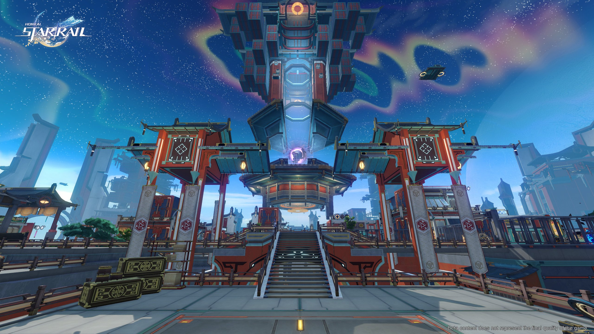

Introduction
About The Game
Honkai: Star Rail is a brand-new space fantasy RPG title with a journey through immense worlds of the
unknown. The game features an intuitive turn-based combat system, large maps with maze exploration,
puzzle-solving gameplay, and immersive storylines that together compose an interstellar melody filled
with surprises and rewarding experiences, that echo throughout the universe! Click here to read more.
Gameplay Combat
Honkai: Star Rail has a turn-based combat system, which means players must choose what each character is
to do on the field, and they will execute each action in order, based on their individual speed stats.
Players that have played any traditional JRPGs, for instance, will understand the combat system in
Honkai: Star Rail quite quickly. Games like the early Final Fantasy titles follow the same structure.
However, it is important to point out that there are a few other mechanics that come into play that
still need to be understood before tackling the game. Click here to read more.
Exploration
Players are able to roam around and explore the various areas of the Honkai: Star Rail map for treasure
chests, enemies, puzzles, and more. However, each area is its own separate zone, so there will be a
loading screen when traveling between different areas in the overworld.
When exploring the world, you will select one character out of the four in your team to be your active
character. The active character is the one on screen that you control. You can switch the active
character anytime when you are outside of combat. Click here to read more.
Characters
How to Obtain
Most playable Honkai: Star Rail characters are obtained through the in-game Gacha system, also called the
Warp system. The main character, known as the Trailblazer, will be part of your roster from the very
start of the game. They can be male or female depending on the player's choice. This is also the only
character not available in the Warp system. Click here to read more.
Locations
Herta Space Station
Not content with the laws of the common world, the Genius Society's Herta set her sights on the
unexplained existences of the galaxy, expecting those distant mysteries to satisfy her curiosity. To
this end, Herta led the establishment of a museum-like starship and launched it towards the Star Rail,
starting the research work to seal all strange existences among the stars. And the famous Herta Space
Station was born. Click here to read more.
Jarilo-VI
Traversing across the snow plains, you can get a full view of Belobog, the only spot on the ice-cold
world of Jarilo-VI that barely fits the definition of "a warm place." As the only remaining city with
human civilization, Belobog has been given many grandiose titles: the last bastion of mankind against
the Eternal Freeze, the land blessed by Qlipoth... Click here
to read more.
The Xianzhou Luofu
The Xianzhou Luofu is one of the six flagships of the Xianzhou Alliance. It sails in the endless ocean of stars like a one-way arrow, shooting toward the Lord of the Hunt's destined enemy.Click here
to read more.
